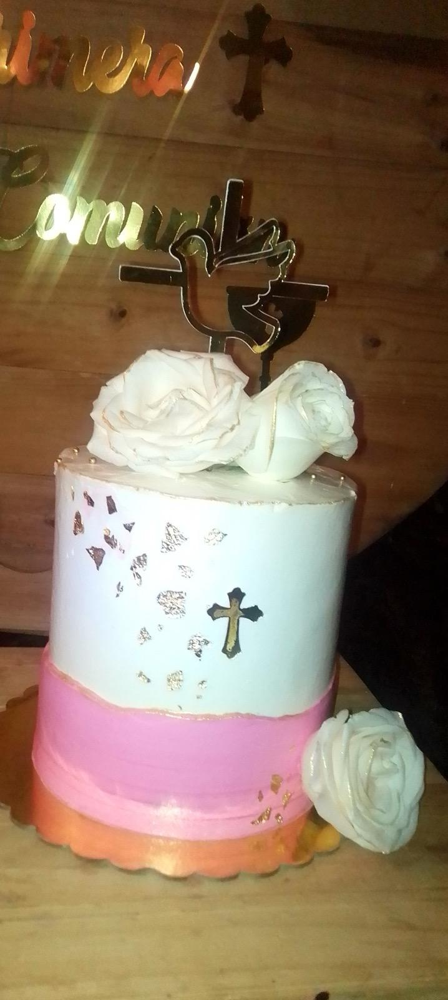

¿Con cuánta antelación?
Para comuniones conviene consultar cuanto antes, especialmente en temporada alta de primavera.
Primera comunión
Tartas artesanales para comuniones con decoración personalizada, tonos suaves y detalles pensados para la celebración.
Consultar fechaDulce y personalizado
Preparamos tartas de comunión en Valencia adaptadas al estilo de la familia: diseños florales, acabados elegantes, toppers, cruces, nombres, colores pastel o detalles a juego con la mesa de celebración.
También podemos coordinar la tarta con cupcakes, galletas o una mesa dulce para que todo mantenga una estética común.

Valencia y alrededores
Atendemos pedidos en Valencia, Catarroja, Albal, Massanassa, Benetússer, Alfafar y zonas cercanas.
Para comuniones conviene consultar cuanto antes, especialmente en temporada alta de primavera.
Sí. Ajustamos colores, nombre, decoración, formato y sabores según la idea del evento.
Sí. Podemos preparar cupcakes, galletas y mini dulces coordinados con la tarta.
Escríbenos por WhatsApp con fecha, raciones y estilo deseado.